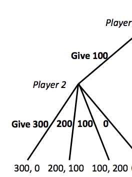

"An “Ethical” Game-Theoretic Solution Concept for
Two-Player Perfect-Information Games" (Letchford, Conitzer, Jain 2008)
"The Social Dilemma of Autonomous Vehicles" (Bonnefoni, Shariff, Rahwan 2016)
"Our driverless dilemma" (Greene 2016)

"Moral Decision Making Frameworks for Artificial Intelligence" (Conitzer et al 2017)

"Adapting a Kidney Exchange Algorithm to Align with Human Values" (Freedman et al 2018)

"Overtrust of Robots in Emergency Evacuation Scenarios" (Robinette et al 2016)